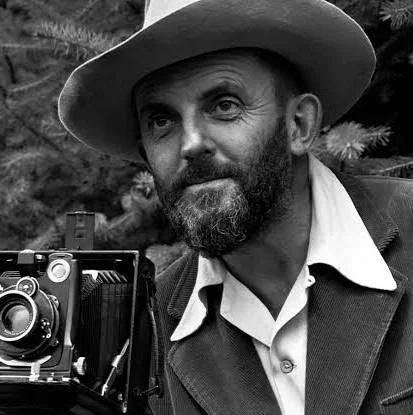
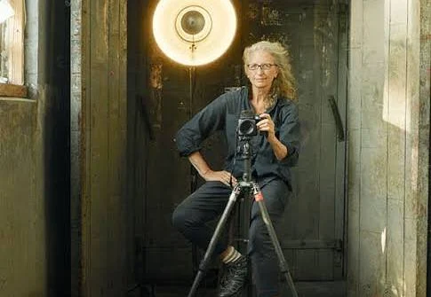
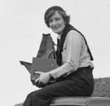

Not only does photography require technical skills, but it also demands an artistic eye and a deep understanding of light and composition. It does not only act as a hobby but also as a source of income.

Ansel Easton Adams was an American landscape photographer and environmentalist known for his black-and-white images of the American West. He helped found Group f/64, an association of photographers advocating "pure" photography which favored sharp focus and the use of the full tonal range of a photograph.

Anna-Lou Leibovitz is an American portrait photographer best known for her portraits, particularly of celebrities, which often feature subjects in intimate settings and poses.

Dorothea Lange was an American documentary photographer and photojournalist, best known for her Depression-era work for the Farm Security Administration. Lange's photographs influenced the development of documentary photography and humanized the consequences of the Great Depression.